Префектура Исикава · Канадзава · гастрономия
Канадзава за стойкой: «Катаори» с продуктами Ното и суши Такаси Икуты
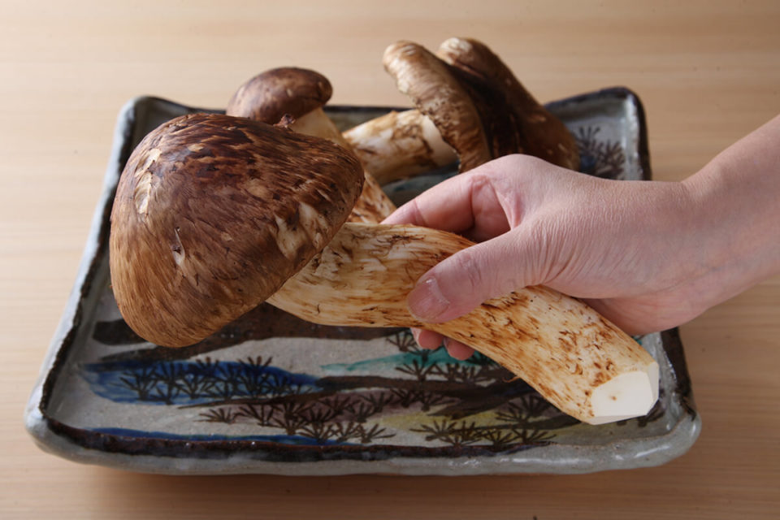
Канадзава давно славится едой, и за стойками её ресторанов можно попробовать лучшее, что дают море и леса полуострова Ното. Два повара, две стойки: один ради продуктов проезжает сотни километров, другой сам выходит в море с удочкой.
Ресторан
«Катаори»: повар, который ездит за продуктами на Ното
Повар, которого заметил придирчивый коллега
Хозяин суши-бара под Канадзавой каждый день объезжает порты полуострова Ното, чтобы раньше всех купить лучшую рыбу дня. Двести километров туда и обратно, и так десять лет без перерыва. Со временем лучшая рыба Ното стала сама приходить к нему. Похвалу от него услышать непросто, но однажды он с восторгом написал, что наконец встретил повара, который думает так же.
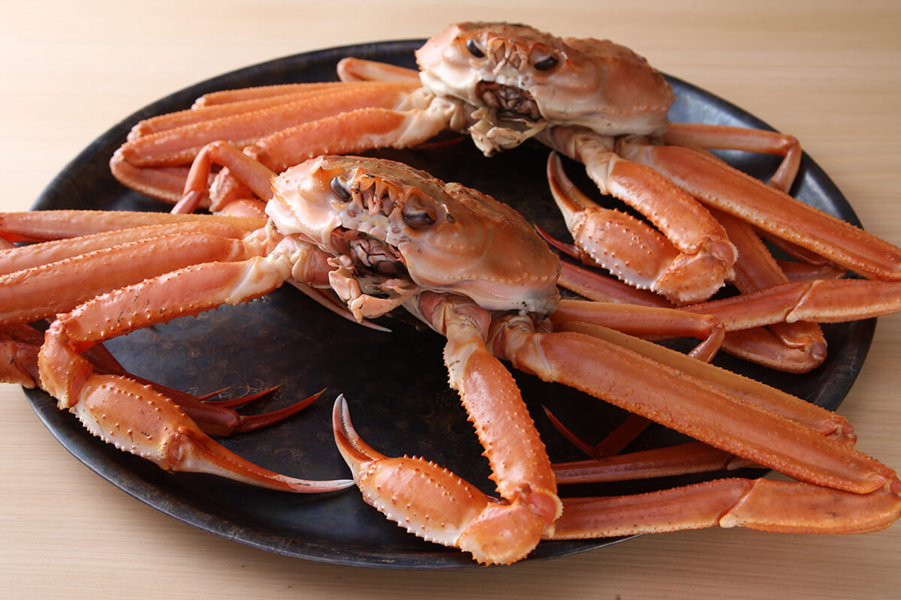
«Ездить каждый день очень тяжело. Тем более он ищет не только рыбу, но и овощи, мацутакэ, даже мясо. Представляю, как ему непросто»
хозяин суши-бара
Речь шла о Такуе Катаори. Одиннадцать лет он учился в одном из лучших ресторанов Канадзавы, потом его пригласили шеф-поваром в другой ресторан, и при нём тот получил звезду Мишлен. В мае 2018 года Катаори открыл собственное заведение.
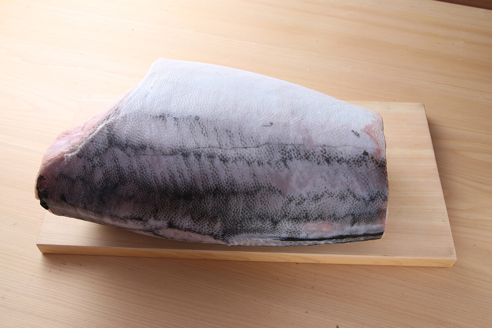
Ресторан стоит у моста Тэндзин через реку Асано, в 15 минутах на такси от вокзала Канадзавы. На другом берегу шумит чайный квартал Хигаси-тяя, а здесь тихо. Гостей встречают сам повар и его жена, хозяйка зала.
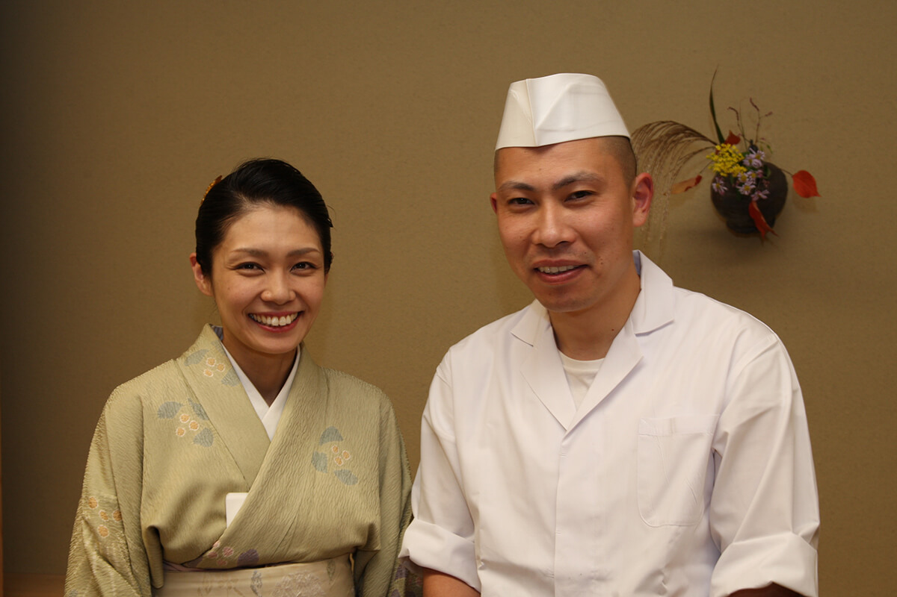
Дом, стойка и посуда
Ресторан новый, но выглядит так, будто стоит здесь много лет. Это городской дом матия, построенный в начале эпохи Сёва (1926–1989). Хозяева купили его примерно за восемь лет до открытия и долго, не торопясь, перестраивали. Сначала гостей проводят в отдельную комнату, где можно перевести дух, и только потом к стойке. Тут и поднимается занавес.
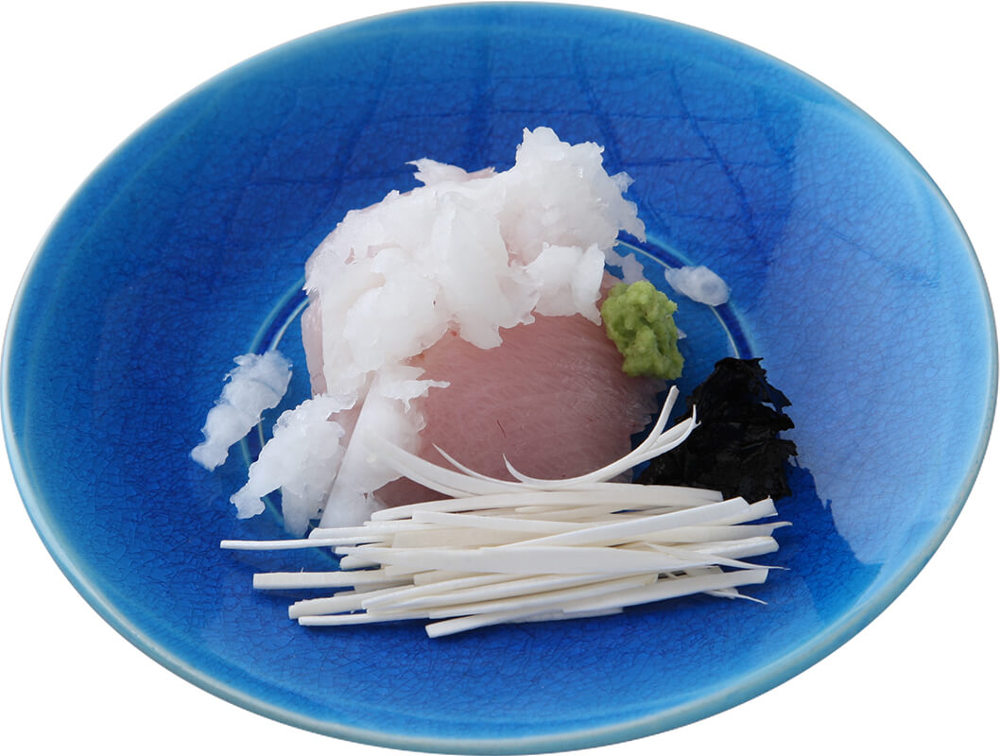
Стойка сделана из дерева атэ, символа префектуры Исикава, а пол выложен камнем томуро: из него сложены стены замка Канадзава. В этом видна любовь к местным традициям. А стулья неожиданно датские, антикварные. Ввести северный дизайн в японский интерьер было смело, и получилось удачно.
Посуде повар уделяет не меньше внимания. Любителей керамики ждёт сюрприз за сюрпризом: на столе как бы между делом появляются тарелки Кутани-яки и работы известных мастеров.
Последние мацутакэ сезона
В тот день главным героем были последние мацутакэ сезона. Гриб, который принесли к стойке, был длиной около 25 сантиметров, тяжёлый, с тонким благородным ароматом.
«Этот гриб я купил вчера, а этот сегодня. Долго не было ничего хорошего, я уже волновался. Наверное, это последние крупные грибы сезона»
Такуя Катаори
За мацутакэ повар ездит на самую оконечность полуострова Ното, в город Судзу: это 300 километров туда и обратно. Там в 2018 году грибные торги проходили дважды в день. Катаори разламывал гриб, купленный на первых торгах, проверял его изнутри и решал, ехать ли на вторые. Особенно ему нужны грибы одного сборщика, который находит лучшие экземпляры во всей округе.
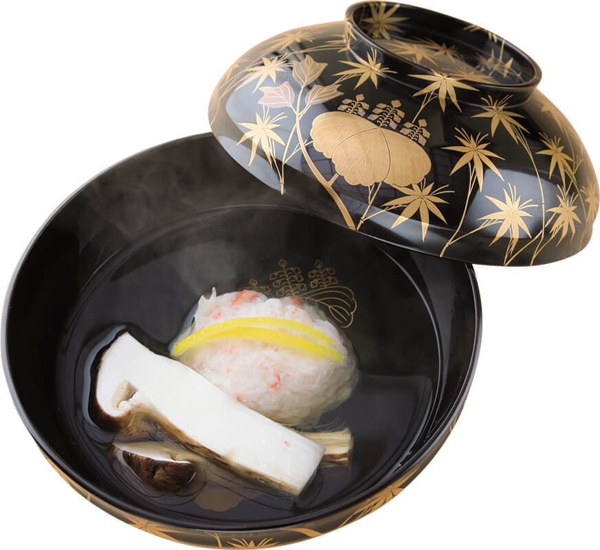
«Снаружи мацутакэ может выглядеть прекрасно, но, пока не разломишь, ничего не узнаешь. Если внутри червь, гриб уже не годится»
Такуя Катаори
Испорченную часть можно было бы просто вырезать, но повар признаёт только безупречные грибы. Чтобы найти один, в котором он уверен, он перебирает много других, а за забракованные платит из своего кармана. В тот вечер аромат, текстура и вкус мацутакэ раскрылись в курсе полностью.
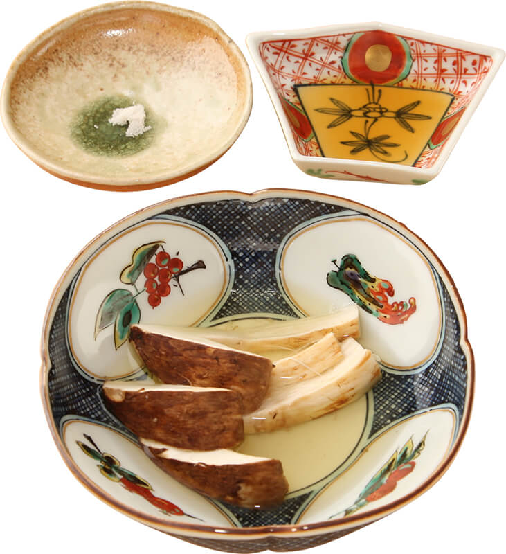
С приходом зимы в курсе появляются крабы и зимний желтохвост из Хими, и за каждым продуктом своя история. Через стойку будто видишь море, горы и поля Ното. Сам повар при этом очень скромен.
«Я только начинаю, и мне всё время кажется, что моя кухня ещё не та. Сомнениям нет конца»
Такуя Катаори
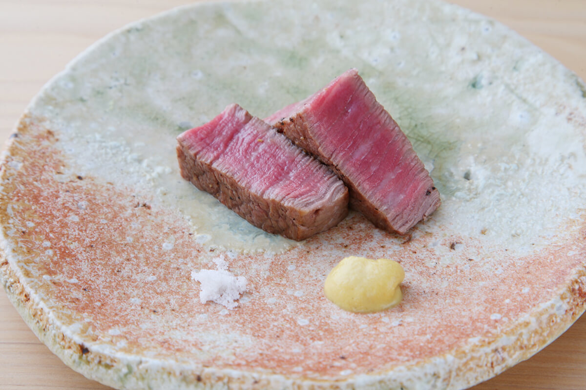
В Канадзаве появился ресторан, куда хочется возвращаться каждый сезон. Курс «омакасэ» в 2019 году стоил от 25 000 иен, цена зависела от продуктов.
«Катаори»
- Адрес
- префектура Исикава, Канадзава, Намики-мати, 3-36
- Телефон
- +81 76-255-1446 (бронирование 10:00–16:30)
- Часы работы
- ужин с 17:00 и с 20:00; по средам и воскресеньям также обед с 12:00
- Выходные
- нерегулярно
- Цены / Вход
- курс «омакасэ» от 25 000 иен (уточнять при бронировании)
Суши
«Суши Икута»: суши-бар в квартале Катамати
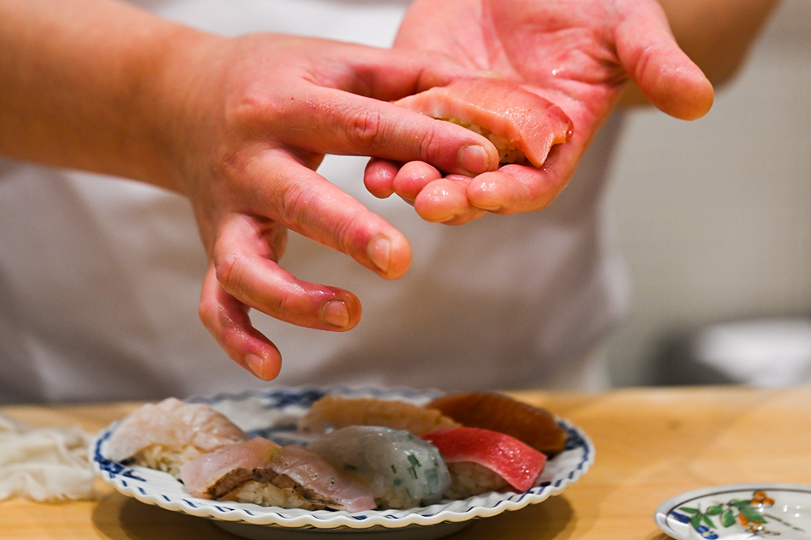
Закуски с оливковым маслом
В квартале Катамати, где хорошие рестораны стоят один к другому, в сентябре 2020 года открылся суши-бар «Суши Икута». Его хозяин Такаси Икута тринадцать лет учился в суши-баре со звездой Мишлен в чайном квартале Хигаси-тяя. Там он перенял и отношение к ремеслу, и умение придумывать новые блюда. Позже ему доверили кухню второго ресторана той же команды, и он начал готовить блюда, не похожие на привычные.
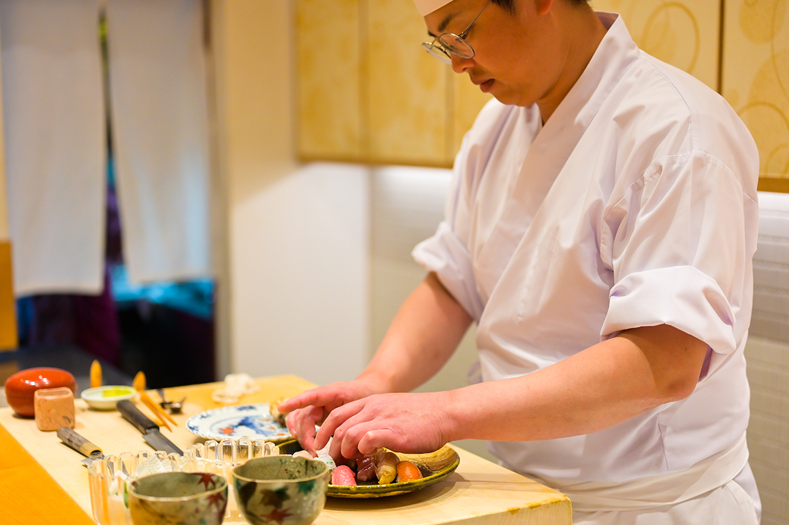
Закуски, по которым запоминается «Суши Икута», выросли из этого опыта. Перед суши подают от трёх до шести закусок.
«Я хочу, чтобы было вкусно, но всё время помню, что это кухня суши-бара»
Такаси Икута
Хороший пример: кальмар аори-ика с мини-тыквой судзу-кабоча под оливковым маслом. Тыкву режут тонкой соломкой, заворачивают в кальмара и поливают хорошим оливковым маслом. Такие блюда, где видна работа ножа, становятся визитной карточкой повара. Их хорошо запивать подобранным сакэ, понемногу готовясь к главному: к суши.
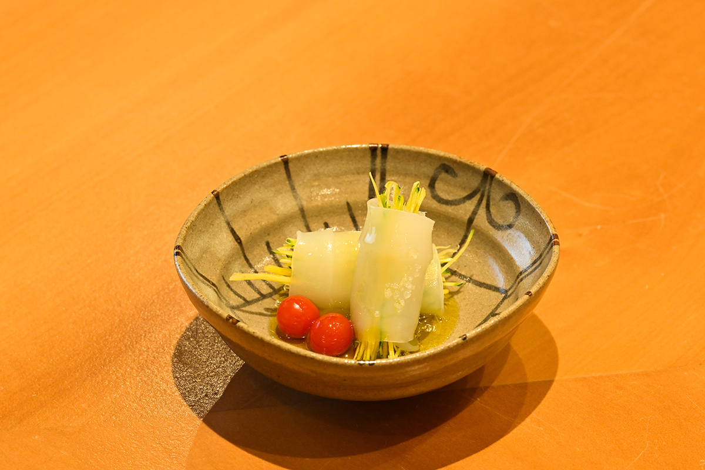
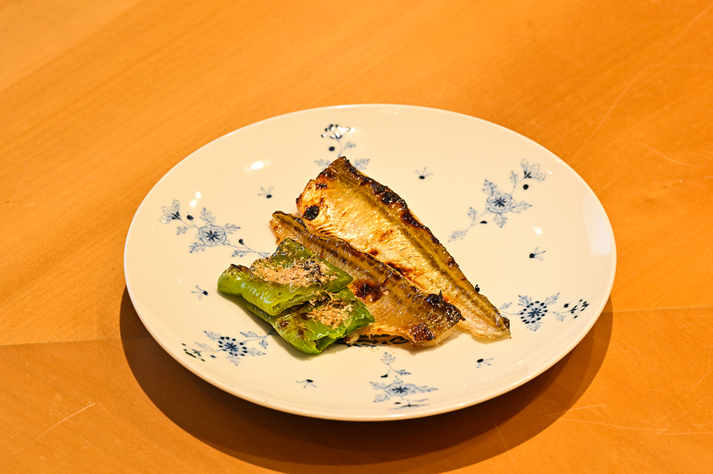
Редкая рыба и улов самого повара
Рис заправляют красным уксусом той же марки, что и в суши-баре, где учился повар. Мягкий рис подчёркивает вкус рыбы. Курс за 15 400 иен (цены 2023 года) можно заказать и в обед, и вечером: шесть закусок, девять суши, ролл и суп мисо. Состав зависит от закупки. В один из дней среди суши были маринованный в соевом соусе молодой тунец, которого в регионе Кансай называют ёкова, и дорогой кальмар ака-ика, нарезанный тонкими нитями. Кальмаров-светлячков мелко надрезают, а в конце ароматизируют листом сакуры. В этой дополнительной заботе и видна рука профессионала.
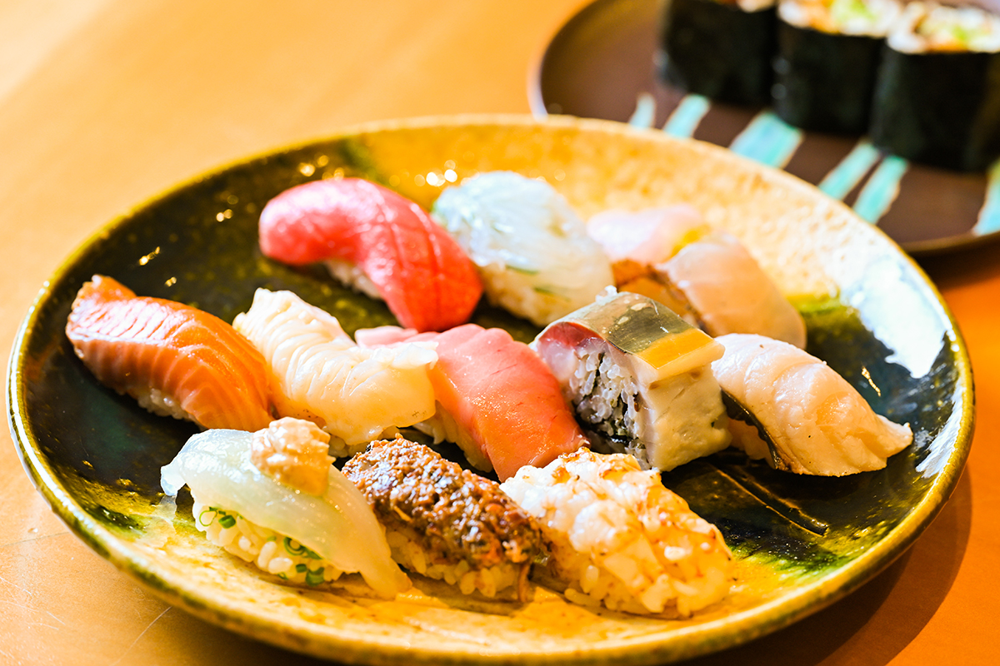
В обед, кроме того, есть курс за 11 000 иен: три закуски, девять суши, ролл и суп. Более простой курс за 7700 иен обходится без закусок. Суши говорят о вкусе Канадзавы, поэтому интересно следить за рыбой каждого сезона. С ранней весны до июня подают моллюска тори-гай из залива Нанао, с июня до начала лета появляется тунец с Ното, которого мало на рынке. Раз в неделю повар сам выходит в море, и его улов тоже идёт на суши. Бывают дни, когда за стойкой подают рыбу ара с плотным мясом, которую называют королём белой рыбы.
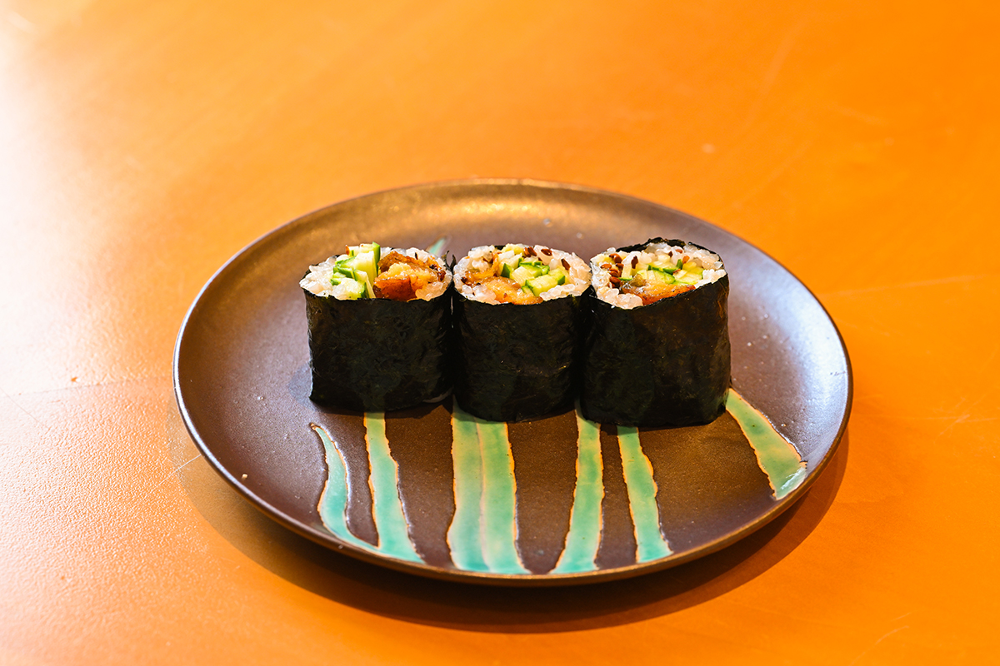
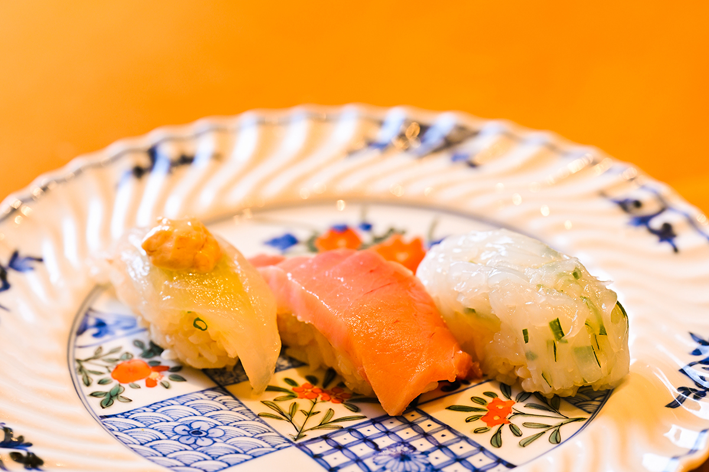
Восемь мест, Кутани-яки и сакэ
За стойкой всего восемь мест, и до повара рукой подать. Он хотел сделать уютное место, и это получилось: сюда спокойно можно прийти и путешественнику, и одному. Вся посуда здесь из Кутани-яки, керамики, которая появилась в Исикаве в начале периода Эдо, в XVII веке. За таким столом лишний раз понимаешь, как богат этот город и едой, и ремеслом.
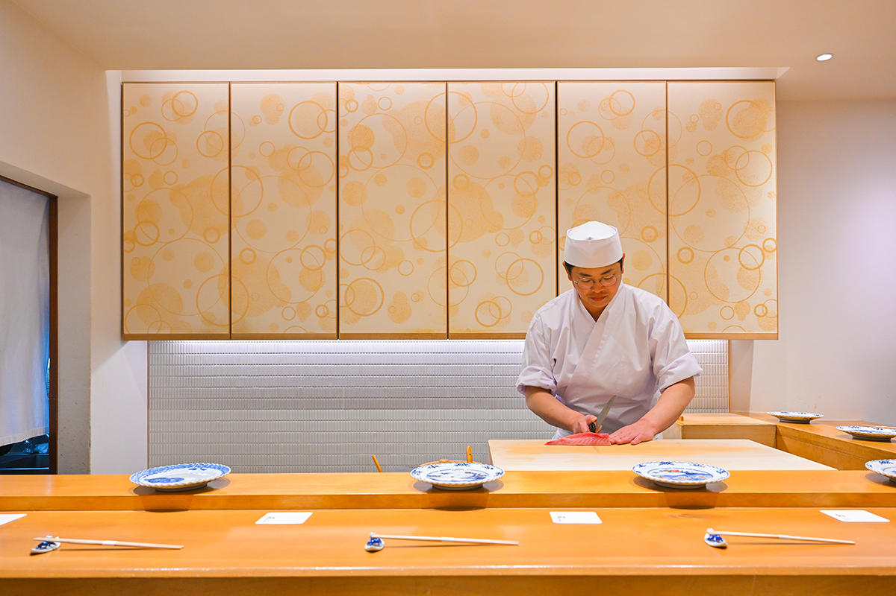
Сакэ подобрано тщательно: «Тэдоригава», «Кокурю», «Кагатоби» из старой винокурни Канадзавы. Суши, сакэ, разговор о посуде: так и проходит вечер, ради которого стоит приехать в Канадзаву.
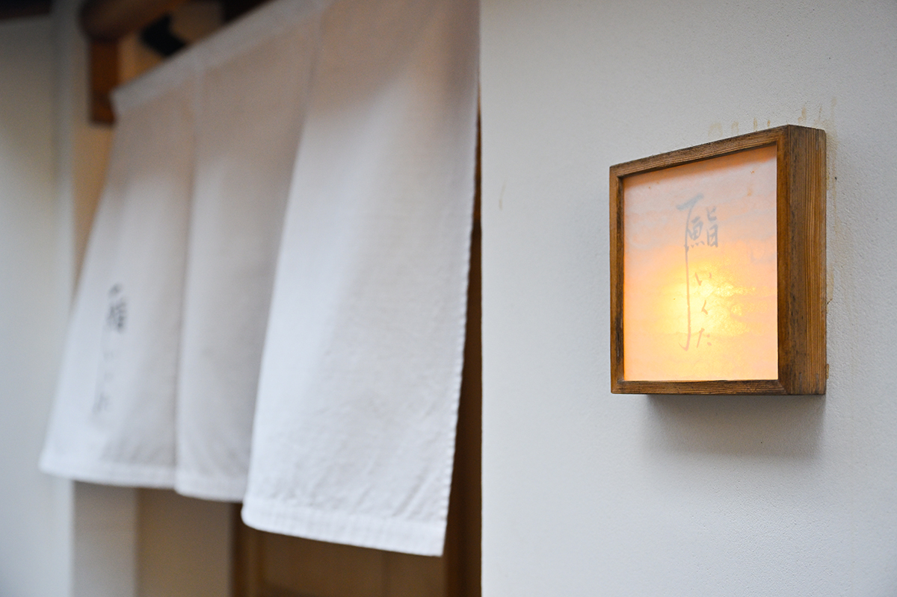
«Суши Икута»
- Адрес
- префектура Исикава, Канадзава, Катамати, 1-4-4
- Телефон
- +81 76-254-1422
- Часы работы
- 12:00–13:00 и 18:00–20:00 (время входа)
- Выходные
- нерегулярно
- Цены / Вход
- обед 7700 и 11 000 иен, курс 15 400 иен в обед и вечером
Фото: Мунэаки Маэда, Такаси Гоми.